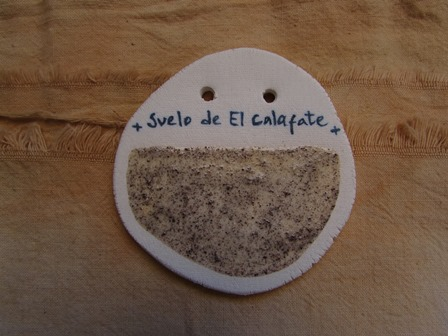
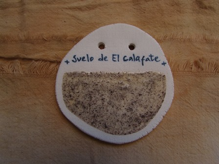

Suelos del sur
Pienso que es muy poético buscar y obtener color de un lugar
determinado.
Trabajar de esta manera me permite extraer la cromaticidad
intrínseca a cada entorno particular.
Esta serie surge como resultado de la recolección de pequeños
fragmentos de suelos con los que me encontré en mis dos viajes al
sur realizados a finales de 2021 y
principios de 2022.


 
